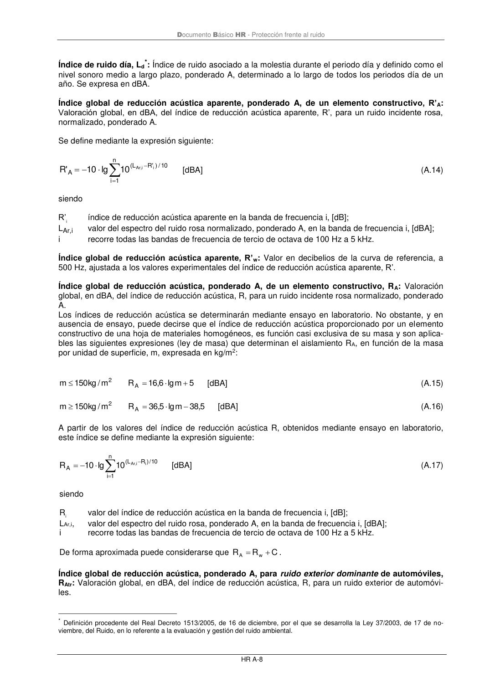

DB-HR Protección frente al ruido · edición 2019-12-20 · capa oficial
Documento DB-HR-oficial · SHA-256 del PDF a67baeca5138bb1f121f797d23a79a4557bd9ac4abacd954024893e05411eeab
Copia fiel del PDF fuente · Fuente oficial
Ficha de la disposición en la fuente oficial
Formatos: JSON del segmento · Markdown
= − − = n 1 i 10 /) ' R L ( A i i, Ar 10 lg 10 ' R [dBA] (A.14) siendo R’i índice de reducción acústica aparente en la banda de frecuencia i, [dB]; LAr,i valor del espectro del ruido rosa normalizado, ponderado A, en la banda de frecuencia i, [dBA]; i recorre todas las bandas de frecuencia de tercio de octava de 100 Hz a 5 kHz. Índice global de reducción acústica aparente, R’w: Valor en decibelios de la curva de referencia, a 500 Hz, ajustada a los valores experimentales del índice de reducción acústica aparente, R’. Índice global de reducción acústica, ponderado A, de un elemento constructivo, RA: Valoración global, en dBA, del índice de reducción acústica, R, para un ruido incidente rosa normalizado, ponderado A. Los índices de reducción acústica se determinarán mediante ensayo en laboratorio. No obstante, y en ausencia de ensayo, puede decirse que el índice de reducción acústica proporcionado por un elemento constructivo de una hoja de materiales homogéneos, es función casi exclusiva de su masa y son aplica- bles las siguientes expresiones (ley de masa) que determinan el aislamiento RA, en función de la masa por unidad de superficie, m, expresada en kg/m2: 5 m lg 6, 16 R m / kg 150 m A 2 + = [dBA] (A.15) 5, 38 m lg 5, 36 R m / kg 150 m A 2 − = [dBA] (A.16) A partir de los valores del índice de reducción acústica R, obtenidos mediante ensayo en laboratorio, este índice se define mediante la expresión siguiente: = − − = n 1 i 10 /) R L ( A i i, Ar 10 lg 10 R [dBA] (A.17) siendo Ri valor del índice de reducción acústica en la banda de frecuencia i, [dB]; LAr,i, valor del espectro del ruido rosa, ponderado A, en la banda de frecuencia i, [dBA]; i recorre todas las bandas de frecuencia de tercio de octava de 100 Hz a 5 kHz. De forma aproximada puede considerarse que C R R w A + = . Índice global de reducción acústica, ponderado A, para ruido exterior dominante de automóviles, RAtr: Valoración global, en dBA, del índice de reducción acústica, R, para un ruido exterior de automóvi- les. *Definición procedente del Real Decreto 1513/2005, de 16 de diciembre, por el que se desarrolla la Ley 37/2003, de 17 de no- viembre, del Ruido, en lo referente a la evaluación y gestión del ruido ambiental.
